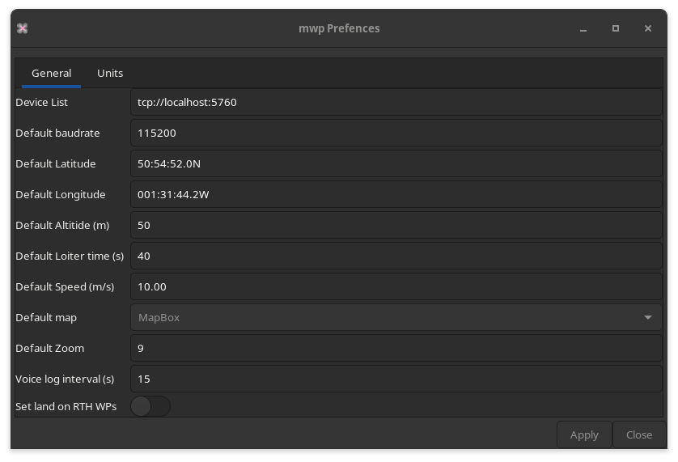
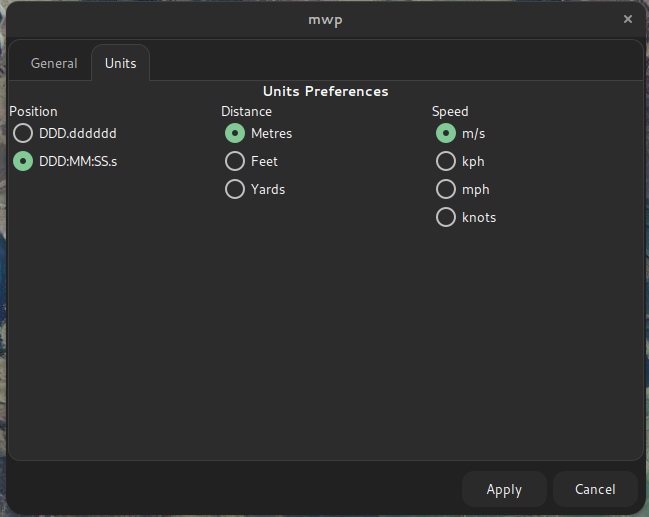
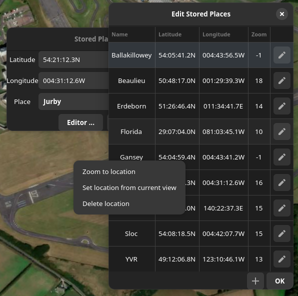

Miscellaneous UI Elements#
Preferences#
The "Edit > Preferences" menu provides a UI for some gsetting / dconf settings. The settings here are applied immediately if 'Apply' is clicked.
General Preferences#

Units Preferences#

Unit preferences should be instantly reflected in the UI when 'Apply' is clicked.
Favourite Places#
mwp maintains a list of favourite places, from "View > Centre on Location" menu item.

The "Place" combo menu holds all places defined in ~/.config/mwp/places (see the configuration reference).
For convenience, clicking the 'Editor ...' button will load the "Places Editor".

- New items are added with the + button.
- Locations can be edited in place
- The context (right mouse button) menu:
- Zoom to location : Zooms to the place
- Set location from current view : Sets the location to the centre of the current map view
- Delete location : Deletes the location without question.
- OK Saves the locations to
~/.config/mwp/places - Closing using the window manager X icon closes without saving.
Useful Shortcuts#
- Control-D : Enters distance measure mode. Click on the map to add more points to measure distance along a path. Press Control-D again to get the distance, with an option to continue to add points. The points may also be dragged.

In the image, we are measuring the distance between the take off home (brown icon) and the landing home (orange icon); the distance markers are the black/white circles. Ctrl-D has been pressed a second time to display the result.
- Control L : Control-Shift L : Copy the pointer location to the clip board (Ctrl-L, decimal degrees, Ctrl-Shift-L formatted).
Keyboard Shortcuts#
Menu and Replay#

Map and Tools#

Last update:
2022-10-13